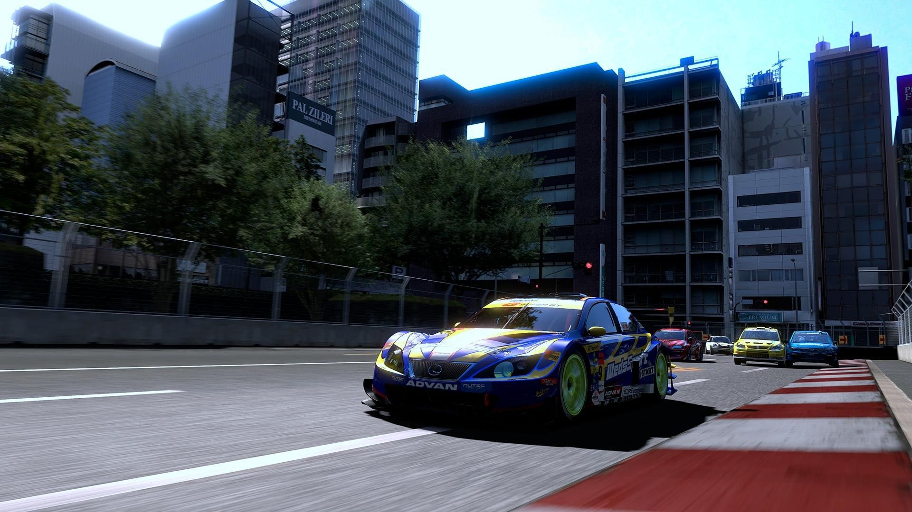
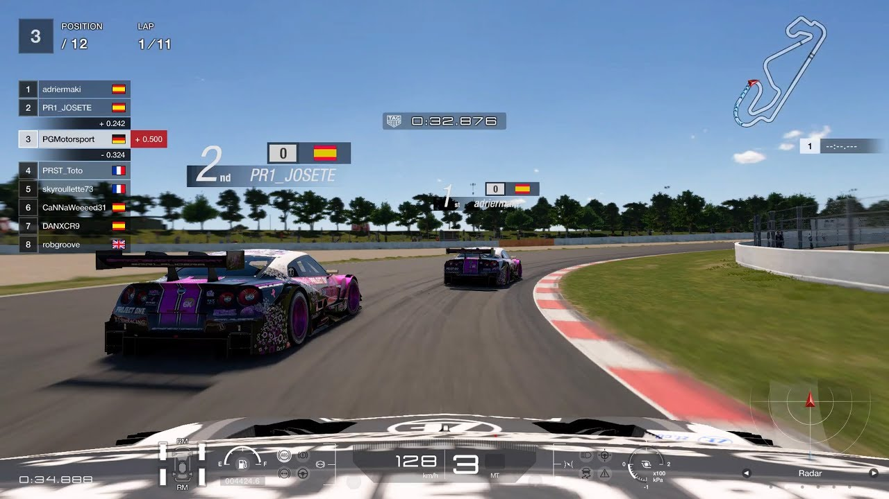
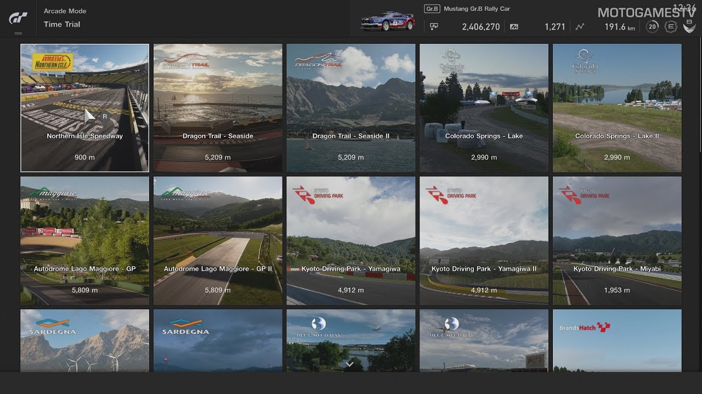
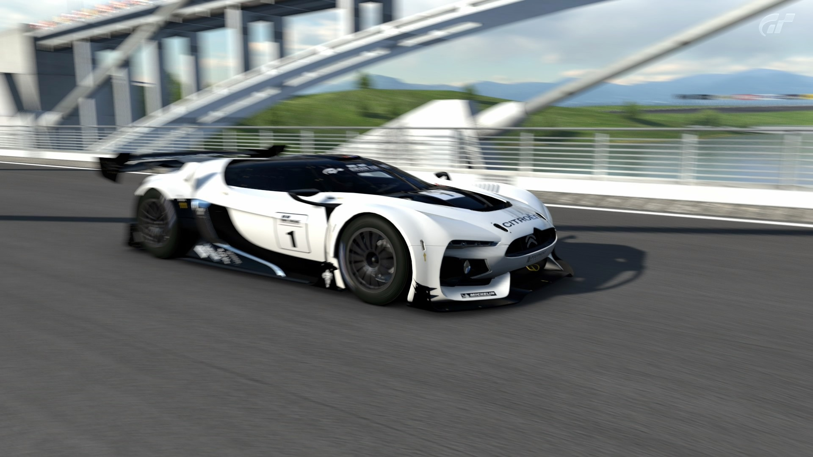

Gran Turismo 5
Gran Turismo 5 is a 2010 racing video game developed by Polyphony Digital and published by Sony Computer Entertainment. It was released for the PlayStation 3 on November 24, 2010 in Europe and North America, and November 25, 2010 in Japan and Australasia, and is the fifth main installment and the tenth overall in the Gran Turismo video game series. It was preceded by the Prologue version and is the first main entry of the series to be released for the PlayStation 3.
The game marks the first entry in the series with online races with support for up to 16 players. A damage model has been included with variations of damage depending on the car. Over 1,000 cars, 29 different locations, 77 different tracks, and a track generator are available in the game. Dynamic time and weather effects make their debut in the series. World Rally Championship, NASCAR and Super GT licenses are utilized for the first time in the Gran Turismo series.
Gran Turismo 5 was well-received critically and a commercial success, becoming the second best-selling PlayStation 3 game, the best-selling PlayStation 3 exclusive and the second best-selling game in the series with over 10 million copies sold. The game also won multiple awards, and turned some players into real-life professional racing drivers with the GT Academy competition.
The game marks the first entry in the series with online races with support for up to 16 players. A damage model has been included with variations of damage depending on the car. Over 1,000 cars, 29 different locations, 77 different tracks, and a track generator are available in the game. Dynamic time and weather effects make their debut in the series. World Rally Championship, NASCAR and Super GT licenses are utilized for the first time in the Gran Turismo series.
Gran Turismo 5 was well-received critically and a commercial success, becoming the second best-selling PlayStation 3 game, the best-selling PlayStation 3 exclusive and the second best-selling game in the series with over 10 million copies sold. The game also won multiple awards, and turned some players into real-life professional racing drivers with the GT Academy competition.

Gameplay
Gran Turismo 5 is the first game in the franchise to provide a damage model, with variations of damage depending on the car. The game also features weather effects, which are available on certain circuits. Optional stereoscopic-3D resolution and karting found a place in the game. Furthermore, new visual effects have been introduced, including dynamic skid marks, dust and the ability for drivers to flash their headlights. A course editor which allows the player to create new circuits by using tools that randomly generate track-parts according to certain player-selected specifications, including the number of corners, the time of day and the number of sectors. There are a variety of themes the player can choose from to act as a base for each circuit design. Themes also have an effect on track length and highest elevation.
Gran Turismo 5 is the first game in the franchise to include both mechanical and external damage modelling, including a real-time deformation engine that processes model deformation according to the speed and angle of impact. It is also possible to overturn cars for the first time in the series. The cars in GT5 are separated into "premium" and "standard" vehicles. Premium vehicles are more detailed and include a fully-detailed cockpit view, while standard vehicles are less detailed. Standard cars initially could not receive aftermarket wheels, however, as of the version 2.02 update this is no longer the case. Gran Turismo 2 previously included damage, but was limited to mechanical failures only.
Gran Turismo 5 is the first game in the franchise to include both mechanical and external damage modelling, including a real-time deformation engine that processes model deformation according to the speed and angle of impact. It is also possible to overturn cars for the first time in the series. The cars in GT5 are separated into "premium" and "standard" vehicles. Premium vehicles are more detailed and include a fully-detailed cockpit view, while standard vehicles are less detailed. Standard cars initially could not receive aftermarket wheels, however, as of the version 2.02 update this is no longer the case. Gran Turismo 2 previously included damage, but was limited to mechanical failures only.

Tracks
Gran Turismo 5 allows players to drive 31 different locations or "scenery" and 81 different track layouts (the previous iteration in the main numbered series, Gran Turismo 4, included 51 tracks total). Dunsfold Aerodrome, located in the United Kingdom – the test track of the British automotive television show Top Gear – is included in the game. The playable demo of Gran Turismo 5 at Gamescom 2009 featured the Tokyo Route 246 track, seen in previous incarnations of the game. Various real-life circuits return from previous games in the series.
These include (among others) Nürburgring, Circuit de la Sarthe, Tsukuba Circuit, Mazda Raceway Laguna Seca and Suzuka Circuit. New real-life circuits included in the game include (among others) Indianapolis Motor Speedway, Monza Circuit, Daytona International Speedway and two new Rome and Madrid city circuits. Many fictional circuits return from previous games in the series including 'Trial Mountain', 'Deep Forest Raceway' and 'Autumn Ring'. An official list of all tracks available in the game has been released by Polyphony Digital.
These include (among others) Nürburgring, Circuit de la Sarthe, Tsukuba Circuit, Mazda Raceway Laguna Seca and Suzuka Circuit. New real-life circuits included in the game include (among others) Indianapolis Motor Speedway, Monza Circuit, Daytona International Speedway and two new Rome and Madrid city circuits. Many fictional circuits return from previous games in the series including 'Trial Mountain', 'Deep Forest Raceway' and 'Autumn Ring'. An official list of all tracks available in the game has been released by Polyphony Digital.

Development
The game was first revealed at E3 2005 under the name Vision Gran Turismo. This was not GT5 but simply Gran Turismo 4 (for the PlayStation 2) with more cars on track and PC-rendered footage. The PlayStation 3 would not be released until November 11, 2006, and with no Gran Turismo game in the console's launch line-up. Various bits of information and news was revealed about the game from then on, but it was not for another three years that the public got a chance to have a proper look at GT5.
At Sony's E3 2009 Press Conference, a trailer for Gran Turismo 5 was shown, revealing the inclusion of Super GT, NASCAR and WRC but no release date was revealed. Yamauchi said that "We've actually reached a point where we can probably release [GT5] anytime, except that you can also keep working as long as you want to as well, it's just a matter of timing". Yamauchi later explained that "Deciding a release date for a game is always difficult, as it’s not something I can decide on my own. The agreement on a date comes between various parties at Sony, and it’s not necessarily a date I would be hoping for. March would've been too early.
We could have produced the game in time to make that deadline, but the finished product wouldn't have had everything that I wanted to include". Sony Computer Entertainment has certain control over the release dates of their games, which could be one of the contributing factors delaying Gran Turismo 5. Gran Turismo 5 was shown off extensively at E3 2010 including a new trailer, a North and Latin American release date, playable demos on the show floor and various private press conferences revealing new information about the game. Alongside the original release, two collector's editions were released; one featuring some extra bonus content and the other, more expensive option containing extra paraphernalia such as further reading on car racing.
At Sony's E3 2009 Press Conference, a trailer for Gran Turismo 5 was shown, revealing the inclusion of Super GT, NASCAR and WRC but no release date was revealed. Yamauchi said that "We've actually reached a point where we can probably release [GT5] anytime, except that you can also keep working as long as you want to as well, it's just a matter of timing". Yamauchi later explained that "Deciding a release date for a game is always difficult, as it’s not something I can decide on my own. The agreement on a date comes between various parties at Sony, and it’s not necessarily a date I would be hoping for. March would've been too early.
We could have produced the game in time to make that deadline, but the finished product wouldn't have had everything that I wanted to include". Sony Computer Entertainment has certain control over the release dates of their games, which could be one of the contributing factors delaying Gran Turismo 5. Gran Turismo 5 was shown off extensively at E3 2010 including a new trailer, a North and Latin American release date, playable demos on the show floor and various private press conferences revealing new information about the game. Alongside the original release, two collector's editions were released; one featuring some extra bonus content and the other, more expensive option containing extra paraphernalia such as further reading on car racing.
Gameplay trailer